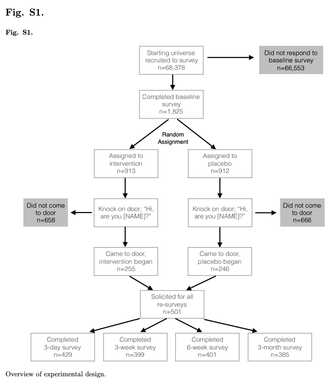
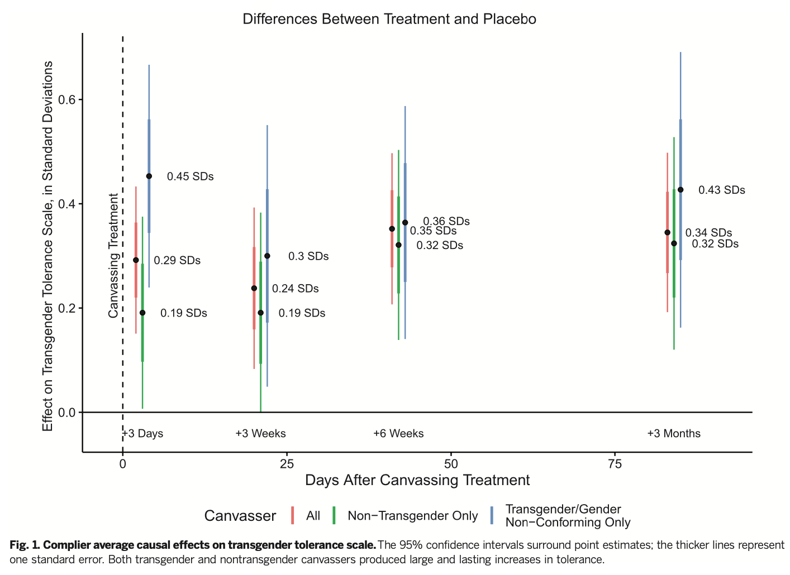

7.3 Compliance
An issue with all experimental designs, but particularly field experiments, is compliance, which refers to whether respondents received the treatment as assigned.
Do subjects assigned to treatment receive treatment?
- Encouragement design: Treatment assignment might only “encourage” receipt of treatment, is an intent-to-treat
- Note how Karpowitz et al. label Table 3 as “Intent-to-Treat” effects
- Compliance refers to whether receipt of treatment aligns with assignment to treatment
- One-sided non-compliance: some individuals assigned to treatment don’t receive treatment failure-to-treat
- Two-sided non-compliance: possibility of both failure-to-treat and that those not assigned to treatment, receive treatment
In the Karpowitz et al. article, what might cause issues with compliance?
7.3.1 Notation for Compliance
Let \(d_i(z)\) be the actual treatment status of unit i where \(z\) is the experimental assignment.
- Practice: what does \(d_i(1) = 0\) mean, in words?
When everyone assigned to treatment receives the treatment \(d_i = z_i\).
We can break subjects into four types based on their compliance: \[\begin{align*} \mbox{Compliers: } &d_i(1)=1; d_i(0)=0 \\ &\implies Y_i(d_i(1)) - Y_i(d_i(0)) = Y_i(1) - Y_i(0) \\ \mbox{Always takers: } &d_i(1)=1; d_i(0)=1 \\ &\implies Y_i(d_i(1)) - Y_i(d_i(0)) = Y_i(1) - Y_i(1) \\ \mbox{Never takers: } &d_i(1)=0; d_i(0)=0 \\ &\implies Y_i(d_i(1)) - Y_i(d_i(0)) = Y_i(0) - Y_i(0) \\ \mbox{Defiers: } &d_i(1)=0; d_i(0)=1 \\ &\implies Y_i(d_i(1)) - Y_i(d_i(0)) = Y_i(0) - Y_i(1) \end{align*}\]
What does \(ATE|d_i(1) > d_i(0)\) mean, in words?
With full compliance ATE = ITT. With non-compliance, our standard estimation of the treatment effect is now the ITT.
- Where we estimate \(ITT_i = Y_i(z = 1) - Y_i(z=0)\)
- Example: Karpowitz et al. stick with the ITT
- With assumptions, we may be able to identify and estimate the Complier Average Causal Effect, the average treatment effect just among compliers.
7.3.2 Complier Average Causal Effect
\(CACE = E[Y_i(d = 1) - Y_i(d = 0) | d_i(1) > d_i(0)]\)
While it may be incredibly tempting, to estimate this by just subsetting on receipt of treatment instead of experimental assignment, we cannot simply subset our treatment group to only include those who received the treatment. Why not?
CACE Additional Identification Assumptions
- Exclusion restriction: \(Y_i(z, d) = Y_i(d)\) where z is experimental assignment
- Monotonicity (i.e., no defiers): \(d_i(1) \geq d_i(0)\) for all \(i\)
- In practice, to actually estimate the effect, you need data–and accurate data– on receipt of treatment. (Not always possible.)
- How would one identify compliance in the Karpowitz et al. article?
- How would one identify compliance in the Siegel and Badaan article?
Estimation Process is in two stages
- \(\widehat{ITT}_D\): Estimate the effect of experimental assignment on receipt of treatment
- This is the proportion of compliers when assuming monotonicity (no defiers). Note: This does not necessarily identify who is a complier, just the proportion of compliers.
- \(\widehat{ITT}\): Estimate the effect of experimental assignment on the outcome
- Scale the ITT by receipt of treatment: \(\widehat{CACE} = \frac{\widehat{ITT}}{\widehat{ITT}_D}\)
- We have to be in a world where \(ITT_D > 0\) (at least one complier) to identify the CACE
We can take the example from Gerber and Green 2012.
- What is the effect of canvassing on voter turnout?
- The experiment assigned some people to be canvassed, some not to be canvassed.
- The treatment is actually having contact with the canvasser.
- What could be a compliance issue here?
Two-stages = two regressions
- Our outcome is whether someone \(Y=\)
voted. - We have an experimental \(z=\)
assignmentvariable - And we have a compliance variable \(d=\)
treated
## Replicating Chapter 5 analyses
## z = Assigned, d = Treated, y= Voted
library(foreign)
voters <- read.dta("data/ggch5.dta")
## 1. effect of experimental assignment on receipt of treatment
ITTd <- lm(treated ~ assigned, voters)
## 2. effect of experimental assignment on whether voted (outcome)
ITT <- lm(voted ~ assigned, voters)
## 3. ratio of treatment effect. compare with Box 5.6
ITT$coefficients[2]/ITTd$coefficients[2]## assigned
## 0.1407115Alternative, recommended approach using ivreg. This will calculate the correct standard errors for this type of setup using instrumental variables regression. The experimental assignment is considered an “instrument” for the treatment.
install.packages("AER")library(AER)
## Function for conducting two-stage least squares regression
## Takes form ivreg(Y ~ d | z, data)
cace <- ivreg(voted ~ treated | assigned, data = voters)
summary(cace)$coefficients[2,]## Estimate Std. Error t value Pr(>|t|)
## 0.140711507 0.052276906 2.691657117 0.007126494## Optional, more conservative standard errors
coeftest(cace, vcovHC(cace))[2,] ## Estimate Std. Error t value Pr(>|t|)
## 0.140711507 0.052433888 2.683598551 0.007300369Substantively, when might be interested in the CACE? When might we not?
- Caution: is compliance data accurate? is compliance rate low or high?
7.3.3 Design-based approach to help measure compliance
Use a placebo treatment (e.g., Broockman and Kalla), which may allow you to observe compliance in both the treatment and control conditions.

Note that Broockman and Kalla report Complier Average Causal Effects comparing those in the assigned treatment and placebo conditions.

In their supplemental materials, they note how this is calculated: “501 voters identified themselves at the door after the initial greeting that did not differ by condition.”
- Note this gives them justification for subsetting and comparing these individuals
“Canvassers then either began an intervention conversation or a placebo conversation. Of the 246 voters who identified themselves at their doors in the treatment group, 192 began the conversation and at least described their initial view on the law to the canvasser, rather than refusing to talk at all after identifying themselves. On the other hand, the treatment was inadvertendly delivered to 11 individuals in the placebo group due to canvasser error.”
- “Consistent with our pre-analysis plan, we report estimated complier average causal effects for the intervention under the assumptions that 1) there was no effect of the intervention for the voters who immediately refused to talk, and 2) there are no defiers; that is, no voters only received the intervention if they were assigned to the placebo group yet would not have received it were they actually in the treatment group.”